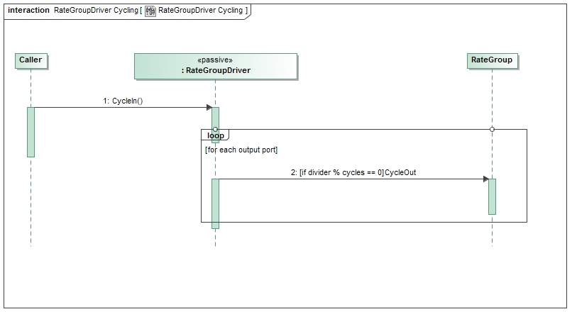

Svc::RateGroupDriver Component
1. Introduction
Svc::ActiveRateGroup is an active component that drives a set of components connected to Svc::Sched output ports. It contains an asynchronous input Svc::Cycle port. This port sends a message which wakes the component task. The task invokes each output port in order, passing an argument indicating the order. It tracks execution time and detects overruns.
2. Requirements
The requirements for Svc::ActiveRateGroup are as follows:
| Requirement | Description | Verification Method |
|---|---|---|
| ARG-001 | The Svc::ActiveRateGroup component shall be active and will be woken up by an input asynchronous port call | Inspection, Unit test |
| ARG-002 | The Svc::ActiveRateGroup component shall invoke its output ports in order, passing the value contained in a table based on port number | Unit Test |
| ARG-003 | The Svc::ActiveRateGroup component shall track the time required to execute the rate group and report it as telemetry | Unit Test |
| ARG-004 | The Svc::ActiveRateGroup component shall report a warning event when a rate group cycle is started before previous is completed | Unit Test |
3. Design
3.1 Context
3.1.1 Component Diagram
The Svc::ActiveRateGroup component has the following component diagram:

3.1.2 Ports
The Svc::ActiveRateGroup component uses the following port types:
| Port Data Type | Name | Direction | Kind | Usage |
|---|---|---|---|---|
Svc::Cycle | CycleIn | Input | Asynchronous | Receive a call to run one cycle of the rate group |
Svc::Sched | RateGroupMemberOut | Output | n/a | Rate group ports |
3.2 Functional Description
The Svc::ActiveRateGroup component has one input port that is called to wake up the task to execute one cycle.
The task of the component calls the output ports in order, passing the context from the context list as the port argument.
The component sets a flag when the cycle port is invoked. At the beginning of the rate group execution, the component clears the flag. If it detects that it has been set again at the end of the rate group cycle, it will declare a cycle slip, send an event, and increase the cycle slip counters.
3.3 Scenarios
3.3.1 Rate Group Port Call
As described in the Functional Description section, the Svc::ActiveRateGroup component accepts calls to the CycleIn and invokes the RateGroupMemberOut ports:

3.4 State
Svc::ActiveRateGroup has no state machines.
3.5 Algorithms
Svc::ActiveRateGroup has no significant algorithms.
4. Dictionaries
Dictionaries: HTML MD
5. Module Checklists
| Document | Link |
|---|---|
| Design Checklist | Link |
| Code Checklist | Link |
| Unit Test Checklist | Link |
6. Unit Testing
The unit test results are as follows:
| Log | Link |
|---|---|
| Test Output | Link |
| Coverage Output | Link |
7. Change Log
| Date | Description |
|---|---|
| 6/22/2015 | Design review edits |
| 7/22/2015 | Design review actions |
| 8/10/2015 | Updated to cycle input port |
| 8/31/2015 | Unit test review updates |
Svc::RateGroupDriver Component
1. Introduction
The RateGroupDriver Component is used to take a single system tick and distribute it to multiple rate groups in a system. It takes the input Svc::Sched port, then divides down the tick rate based on arguments to the constructor. Typically, the output ports would be connected to the asynchronous inputs of an ActiveRateGroup.
2. Requirements
The requirements for RateGroupDriver are as follows:
| Requirement | Description | Verification Method |
|---|---|---|
| RGD-001 | The 'Svc::RateGroupDriver' component shall divide a primary system tick into the needed rate groups | Unit Test |
| RCD-002 | The 'Svc::RateGroupDriver' component shall be able to run in ISR context | Inspection |
3. Design
3.1 Context
3.1.1 Component Diagram
The Svc::RateGroupDriver component has the following component diagram:

3.1.2 Ports
The Svc::RateGroupDriver component uses the following port types:
| Port Data Type | Name | Direction | Kind | Usage |
|---|---|---|---|---|
Svc::Cycle | CycleIn | Input | Synchronous | Receive the system tick |
Svc::Cycle | CycleOut | Output | n/a | Used to drive rate groups |
3.2 Functional Description
The Svc::RateGroupDriver component has one input port that receives a system tick. The constructor has an array of integer arguments that specifies the divisors for each output port.
RateGroupDriverImpl(const char* compName, NATIVE_INT_TYPE dividers[], NATIVE_INT_TYPE numDividers);
The input rate will for each output port will be divided down by the value in the dividers[] array corresponding to the output port number.
The implementation will be ISR compliant by avoiding the following:
- Floating point calculations
- Taking mutexes
- Calling libraries with unknown side effects
- Long implementation
For instance,
SchedIn Rate | divider[0] | SchedOut[0] | divider[1] | SchedOut[1] | divider[2] | SchedOut[2] |
|---|---|---|---|---|---|---|
| 1Hz | 1 | 1Hz | 2 | 0.5Hz | 4 | 0.25Hz |
3.3 Scenarios
3.3.1 System Tick Port Call
As described in the Functional Description section, the RateGroupDriver component accepts calls to the SchedIn and divides them down to the SchedOut ports:

3.4 State
RateGroupDriver has no state machines.
3.5 Algorithms
RateGroupDriver has no significant algorithms.
4. Dictionary
No dictionary for this module
5. Module Checklists
| Document | Link |
|---|---|
| Design Checklist | Link |
| Code Review Checklist | Link |
| Unit Test Checklist | Link |
6. Unit Testing
Coverage Output - RateGroupDriverImpl.cpp
7. Change Log
| Date | Description |
|---|---|
| 6/19/2015 | Design review edits |
| 7/22/2015 | Design review actions |
| 9/2/2015 | Unit test updates |